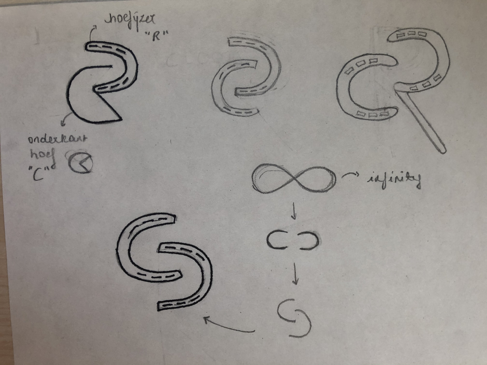
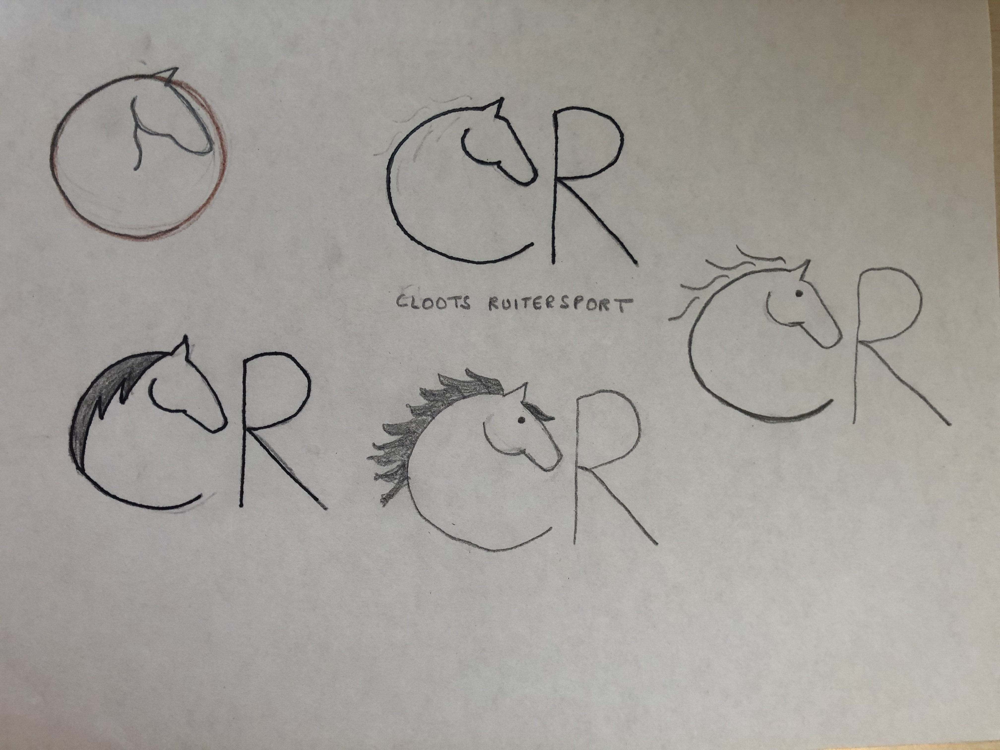
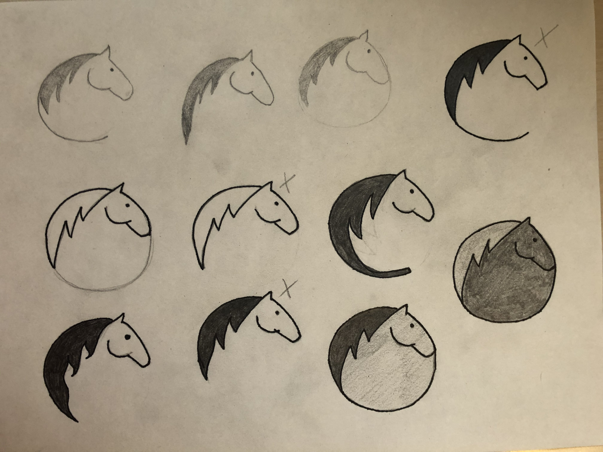
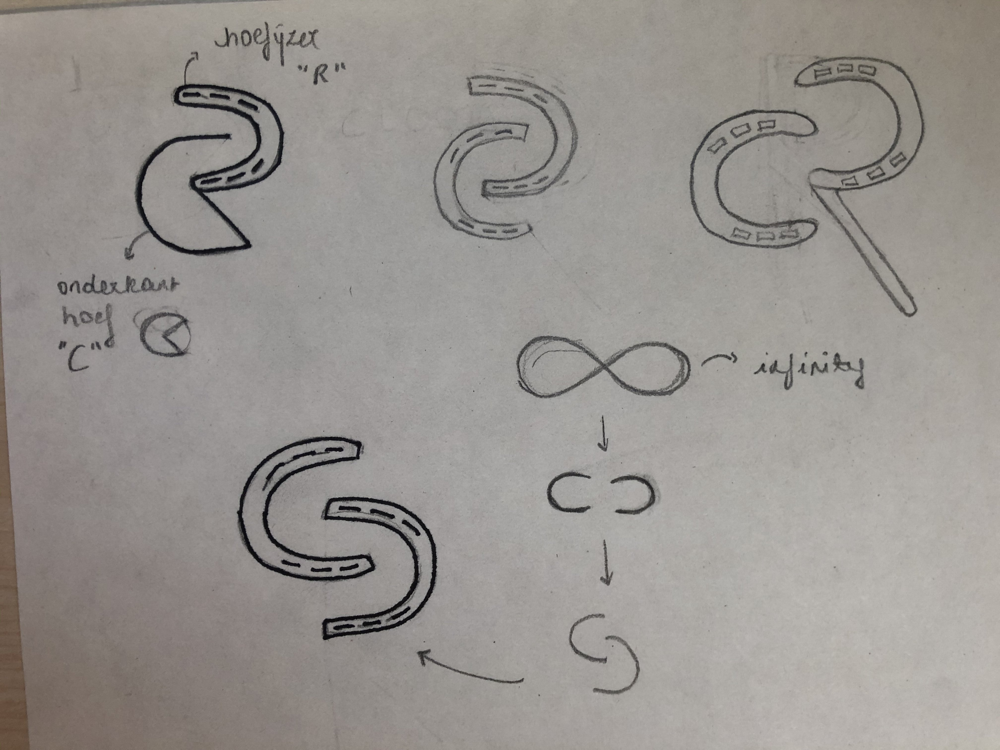
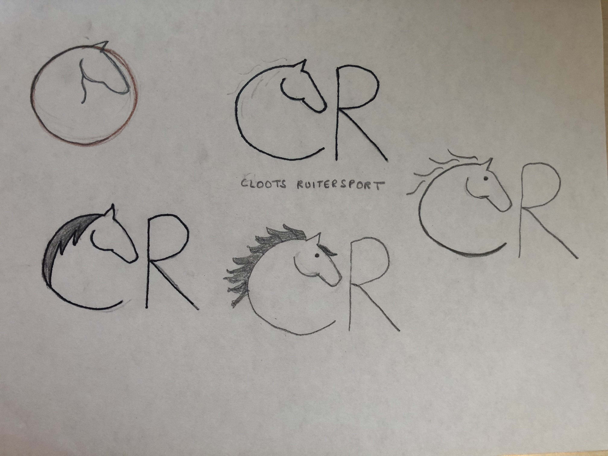
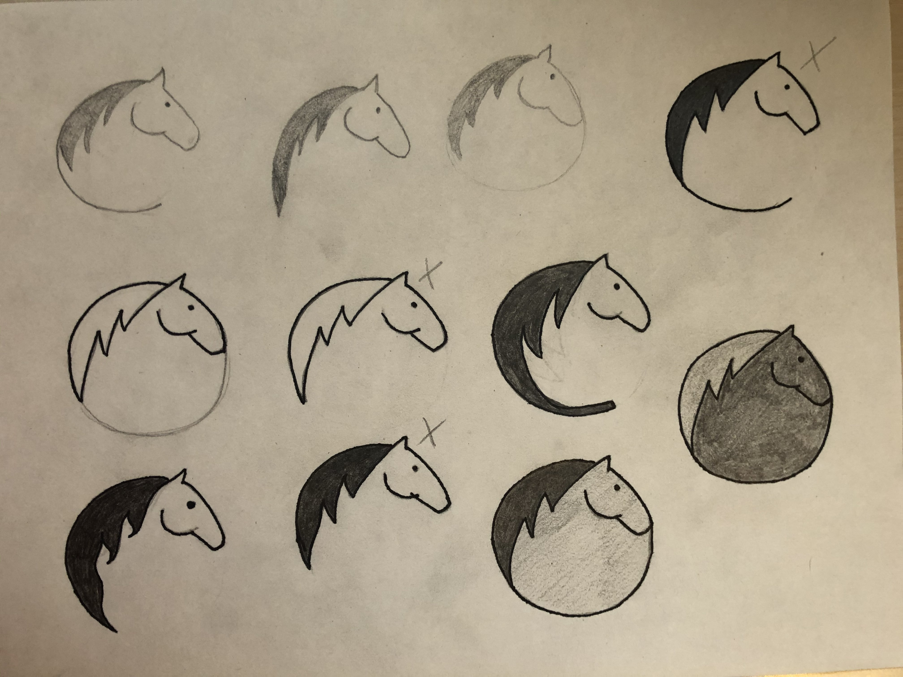

Cloots Ruitersport
REBRANDING
A rebranding and corporate identity guide for Cloots Ruitersport. This was an assignment for the course Graphic Design 4 at the AP University College. Based on already existing elements, a new brand identity was created.
About
Cloots Ruitersport is an equestrian store located in Willebroek. It originated as a family business. Personal advice, quality and trust are the 3 building blocks of Cloots Ruitersport.
These values fit perfectly with the archetype 'The regular guy". This archetype appreciates the quality and reliability of its brand. They prefer the familiar to the strange and will invest emotionally in brands that they trust.
The rebranding for Cloots Ruitersport is based on this archetype.
Process
Research < concept development < logo < corporate identity < brand guidelines < brand manual
Sketches
 





Concept & logo
The logo of Cloots Ruitersport is simple and clearly recognizable. It is composed of 2 parts, the logo with the horse's head and the typographical element "Cloots Ruitersport". The graphic element is the letter C of "Cloots" in combination with a horse's head.
The C in the logo refers to the name and family atmosphere of the shop, their reliability and personal advice on horses. The combination of all these elements creates a coherent whole that combines the values of the brand.
Colours
The colours of the logo reinforce the message. Brown is a natural colour and is associated with the earth, giving it a feeling of stability and support. It also radiates warmth and reliability.
The brand identity also features a few secondary colours. The blue stands for responsibility, professionalism and trust.
Design charter
An overview of various items to indicate the system of the visual identity.